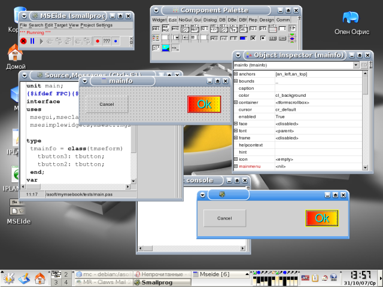

MSEide+MSEgui это среда визуальной разработки программ и их графических интерфейсов на языке Свободный Паскаль (Free Pascal, FP) - MSEide и набор визуальных компонентов (виджетов) для неё - MSEgui.

MSE многоплатформенна и кроссплатформенна - на данный момент реализована для операционных систем (ОС) Linux и Windows. Однако, при желании, может быть портирована и под другие.
Компонеты (виджеты) MSE не привязаны к особенностям ОС, её штатным виджетам, их отрисовку MSEgui проводит самостоятельно. Так достигается принцип неизменности вида интерфейса программы при сборке её под различные ОС.
MSE распространяется бесплатно с исходными текстами под Свободной лицензией GNU GPL.
В этой книге будет освещены базовые принципы использования MSE.
При написании книги используется ОС Linux и все команды и примеры показаны в расчёте на неё. При использовании в других ОС следует это учитывать и изменять их в соответствии со специфическими особенностями системы.
Вначале нужно проверить, установлен ли Free Pascal Compiler, FPC - Компилятор Свободного Паскаля. Если нет - установить и настроить его. Для текущей версии MSE (октябрь 2007 г.) нужен FPC 2.2.0. С другими версиями FPC, MSE работать не будет ! Актуальную информацию об этом можно получить на официальном сайте. Тема установки и настройки FPC выходит за рамки этой книги.
Получить релиз MSE в виде исходных текстов можно с официального сайта: https://mseide-msegui.sourceforge.net или http://homepage.bluewin.ch/msegui/
Либо скачать/обновить самую свежую версию исходников с сервера SVN,
следующей командой:
svn co https://mseide-msegui.svn.sourceforge.net/svnroot/mseide-msegui/trunk/ $mseroot,
где $mseroot директория, в которую нужно скачать MSE (либо директория, в которой уже есть SVN MSE и её нужно обновить). Например: /usr/src/mseide.
Её же мы будем подразумевать как "директорию MSE", ${MSEDIR} в дальнейшем.
Эту же команду можно потом использовать для регулярного обновления MSE. Но если нужно только обновить существующую директорию SVN MSE, не скачивая её "с нуля", можно поступить проще: svn up $mseroot.
Теперь нужно собрать MSEide.
Это можно сделать командой:
fpc -Fu$mseroot/lib/common/* -Fu$mseroot/lib/common/kernel/i386-linux -B $mseroot/apps/ide/mseide.pas.
При успешной сборке появится исполняемый файл, запускающий MSEide: $mseroot/apps/ide/mseide.
IDE (Integrated Development Environment) - интегрированная среда разработки. В неё входят:
Внимание ! Показанные далее положения, взаимокомбинации и размеры окон MSE, могут отличаться от соответствующего расположения у читателя. Среду можно в широких пределах подстраивать под свои потребности. Здесь показан только один из вариантов - вариант автора книги.
Здесь расположены главное меню и кнопки управления запуском отлаживаемой программы.
Через меню можно создавать новые проекты программ, формы (будущие окна программы), файлы, окрывать имеющиеся, настраивать проекты и саму MSEide. И.т.д. То есть через главное меню доступны все организационные команды MSEide.
Чтобы создать новый проект, нужно в главном меню выбрать Project->New и, например, From Template. В появившимся диалоге выбора файла, выбрать default.prj. При этом будет также создана первая форма (окно). MSEide предложит сохранить проект и форму в указаном месте. Проект следует назвать соответственно имени результатирующего выполняемого файла программы. Форму можно называть произвольно, как удобно.
Кнопками управленя запуска можно компилировать и запускать программу, приостановить или прервать её выполнение. Так же есть кнопки пооператоного и пофункционального выполнения приостановленной программы, кнопки включения/выключеня отладочных точек останова.
Только при закрытии главного окна, среда MSEide, со всеми её окнами, будет закрыта. При этом будет предложено сохранить несохранённые файлы, если они есть. Закрытие других окон приведёт только к их закрытию, для их обратного открытия потребуется выполнить соответствующие команды главного меню.

Это форма (будущее окно программы) с помещёнными на неё двумя компонетами типа "кнопка (button)". Левый компонент имеет вид по умолчанию, а у правого, с помощью редактора свойств компонента, изменён внешний вид.

Здесь расположены вкладки с кнопками компонентов. Для использование компонента нужно нажать на его кнопку и либо щёлкнуть на форме в нужном месте, либо, если нужно задать размер, нажав левую кнопку мыши на форме, протянуть вправо вниз до достижения требуемого размера компонента. Впоследствии положение и размер можно менять. Вместо формы могут быть другие компоненты, способные иметь на себе другие компоненты. Некоторые компоненты вообще не предназначены для размещения на формах. Такие можно помещать только на компонент, расчитаный на них.

Здесь можно устанавливать параметры компонента и назначать функции - обработчики событий.

Здесь можно редактировать текст програмы. Можно открывать сразу несколько файлов, их выбор проводится нажатием мышью на табы справа. В редакторе есть подсветка синтаксиса, пока недоработанное автодополнение классов и функций (по Ctrl+Space, Ctrl+Shift+Space), переход к декларации функций / методов (щелчок мышью, при нажатой клавише Ctrl, по названию функции / метода).
Также на левом поле, напротив нужной строки, можно установить / убрать точки останова.

MSEide может применяться не только для разработки программ с графическим интерфейсом, но также и консольных. Здесь отображается стандартный вывод и принимается стандартный ввод запущенной отлаживаемой программы.
Чтобы создать проект консольной программы, надо в главном меню MSEide выбрать Project->New->From Template и в появившемся диалоге открытия файла выбрать console.prj.